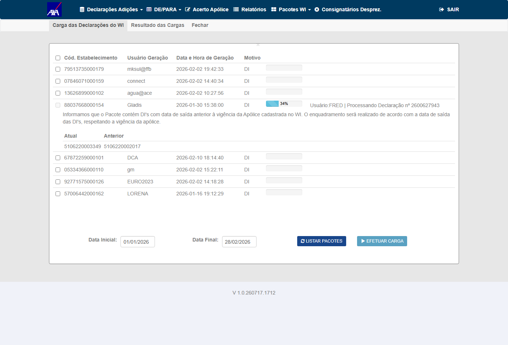
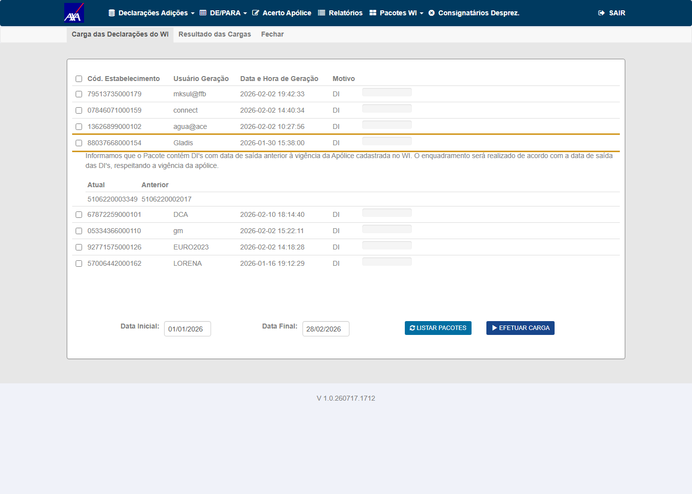

| Sistema | CITWEB — Interface WI/Siscomex (InterfaceSTREITI) |
| Ambiente (com o fix) | AXA HML comum — https://axa-hml-faturamento.nsseg.com.br/ · módulo WI build V 1.0.260717.1712 |
| Credenciais | Usuário FRED (senha em .env — HML_AXA_CITWEB_PASS, não versionada) |
| Base de dados | smt-hom-citweb-axa — tb_apo_int_cit (vigência), tb_itf_smx_dcl_pnd/_dui (staging DI/DUIMP), tb_rel_imp_csg (relação importador/consignatário) |
| Massa do conflito (CT-001) | Pacote 88037668000154 (Gladis) · apólice atual 5106220003349 (30/09/2025–30/09/2028) + anterior 5106220002017 (30/09/2023–30/09/2025) — mesmo importador, ramo 22 |
| Massa (apólices do card GM) | Vigente 0106220002616 (31/08/2024–31/08/2025) · Expirada 0106220001985 (31/08/2023–31/08/2024) — confirmadas no ambiente |
| Método corrigido | Domain/InterfaceStreitiDomain.ObtemApoliceImportadorConsignatario |
| Execução | 17/07/2026 — QA independente (conta Wesley) via script Playwright (login/DICarga) + verificação SQL do enquadramento |
O quê: ao incluir DUIMPs para o importador GENERAL MILLS (CNPJ 61.586.558/0025-62, despachante Schenker), o CITWEB gravava as declarações na apólice expirada 0106220001985 (vig. 2023–2024) em vez da vigente 0106220002616 (vig. 31/08/2024–31/08/2025), impedindo o faturamento correto. Sistemático para todo pacote do Schenker.
Causa-raiz (código): em ObtemApoliceImportadorConsignatario, no ramo "faturamento pelo importador" (i_fat_prf != "C"), o método definia o segurado mas não retornava, caindo no fallback ListarComImportadorCossignatario (sem filtro de data, order by cd_apolice desc) que sobrescrevia a apólice já selecionada por data (ListarPorImportadorConsignatarioApoliceData(..., dataSaida)) pela apólice errada.
Correção: return new KeyValuePair<bool,string>(true, "") logo após definir o segurado — preserva a apólice selecionada por vigência. + log de exceção no catch. commit: 995e7371f · PR: 1345 / 1250 · branch: AXA_7350_DUIMP_HML.
d_sda_vgm) — CT-ENQ-001, CT-ENQ-002.260717.1712), não no Alfa — a validação foi refeita no comum.PCK_43823079000244_...AXA (anexo do card) é binário criptografado e não há upload de pacote pela UII (só arquivo de filtro); o pacote não está na fila WI e a geração depende do WI-Quorum (sistema externo). Por isso o CA foi validado com um conflito natural equivalente já presente no ambiente (pacote Gladis, CT-ENQ-001) — mesma regra (apólice atual + anterior, seleção por data de saída).tb_itf_smx_dcl_pnd × vigência tb_apo_int_cit) + a mensagem do próprio sistema na fila — evidência mais forte que um PROTCARGA isolado.Positivo / end-to-end — processamento total (EFETUAR CARGA) de um pacote real cujo importador tem apólice atual e anterior, com declarações de datas de saída em ambas as janelas de vigência. É o CA Cenário 4 exercido no fluxo completo.
FRED · módulo WI build V 1.0.260717.1712 (com fix)88037668000154 (Gladis, 30/01/2026) na fila DICarga — importador com apólice atual 5106220003349 (30/09/2025–30/09/2028) + anterior 5106220002017 (30/09/2023–30/09/2025)u_apo_pnc) de cada DI vs. sua data de saída (d_sda_vgm) e a vigência de cada apóliceorder by cd_apolice desc).| Apólice | Vigência | Datas de saída das DIs | Qtd | Dentro | Fora |
|---|---|---|---|---|---|
5106220002017 (anterior) | 30/09/2023–30/09/2025 | 29/09/2025 | 8 | 8 | 0 |
5106220003349 (atual) | 30/09/2025–30/09/2028 | 09/10 a 15/12/2025 | 26 | 26 | 0 |
| Total | 34 | 34 | 0 |


Positivo / usabilidade — confirma que a lógica de vigência está ativa no build: o sistema detecta e comunica o conflito de vigência do pacote antes da carga.
Verificação complementar por banco (comum): das declarações com apólice real e data de saída preenchida, 1504/1629 dentro da vigência; os 125 fora são predominantemente desprezadas (i_dpz=S, 56) e dados de carga antigos — nenhum no pacote de conflito Gladis (34/34 dentro).
Revisão de código (planejamento, passo 0c) — confirma que a implementação do fix corresponde à regra de negócio do CA.
ListarPorImportadorConsignatarioApoliceData(..., dataSaida)), sem cair no fallback sem-data que sobrescrevia com order by cd_apolice desc.995e7371f em Domain/InterfaceStreitiDomain.cs (método ObtemApoliceImportadorConsignatario, ~linha 5606). O return (true, "") impede a queda no fallback ListarComImportadorCossignatario (sem filtro de data), preservando a apólice selecionada por vigência. Também adiciona log estruturado no catch.else { cd_segurado = cnpjImportador; + return new KeyValuePair<bool, string>(true, ""); } } } ... return new KeyValuePair<bool,string>(false, "Apólice não encontrada para o importador CNPJ " + cnpjImportador); - catch + catch (Exception ex) + { + SimetriasLog.AppLog appLog = new SimetriasLog.AppLog("ERRO ==> InterfaceStreitiDomain.ObtemApoliceImportadorConsignatario "); + appLog.Source = ex.Source; appLog.StackTrace = ex.StackTrace; appLog.Gravar();
Pré-condição / massa — confirma que o par de apólices do defeito (histórica + vigente) existe no ambiente de teste.
0106220002616 (vigente) e 0106220001985 (expirada) existem em smt-hom-citweb-axa-alfa, ramo 22, org 1.tb_apo_int_cit na base smt-hom-citweb-axa (comum). As duas apólices do defeito coexistem, com a vigência exata do card.| Apólice | Ramo | Vigência início | Vigência fim | Situação |
|---|---|---|---|---|
0106220002616 | 22 | 31/08/2024 | 31/08/2025 | VIGENTE à época (a correta) |
0106220001985 | 22 | 31/08/2023 | 31/08/2024 | EXPIRADA (a errada do bug) |
Nota: a relação importador/consignatário e o subgrupo do CNPJ General Mills não estão cadastrados neste ambiente, e o pacote Schenker não está na fila — por isso o CA foi validado com o conflito equivalente do CT-ENQ-001 (ver CT-ENQ-005).
Reprodução fiel — processar o pacote do despachante Schenker (CNPJ 43.823.079/0002-44) para o importador General Mills e conferir o enquadramento na apólice vigente 0106220002616.
0106220002616.PCK_43823079000244_20250702161234.AXA anexado ao card é binário criptografado (formato proprietário PCK12) — não é possível parsear/injetar seu conteúdo; (2) o CITWEB não oferece upload de pacote pela UI (o único arquivo aceito na DICarga é o "arquivo de filtro"); (3) o pacote Schenker não está na fila WI do ambiente e a relação/subgrupo do CNPJ General Mills não estão cadastrados. A ingestão do pacote depende do WI-Quorum (sistema externo legado), fora do alcance do QA — o .AXA só é decodificado pelo próprio WI durante a carga. O CA (seleção por vigência) está coberto pelo CT-ENQ-001 — processamento completo de um pacote de conflito equivalente (apólice atual + anterior, mesmo importador), gravado corretamente por data de saída. O método corrigido ObtemApoliceImportadorConsignatario é o mesmo caminho de seleção de apólice usado para DI e para DUIMP; validá-lo via DI exercita a mesma regra. Ressalva: o processamento do pacote Schenker/GM específico (DUIMP) só poderá ser homologado 1:1 quando o pacote for restaurado na fila do WI-Quorum.Recomendação: para reproduzir o cenário idêntico, solicitar à equipe de integração/infra a restauração do pacote Schenker (cd_estabel=43823079000244 / 2025-07-02 16:12:34) na fila WI e o cadastro da relação/subgrupo do CNPJ GM.
| Critério de Aceite | CT(s) | Resultado |
|---|---|---|
| Cenário 4 — apólice selecionada pela vigência que contém a data de referência | CT-ENQ-001, CT-ENQ-002, CT-ENQ-003 | APROVADO |
| Massa do defeito disponível (apólices vigente + expirada) | CT-ENQ-004 | APROVADO |
| Reprodução idêntica do pacote Schenker/GM | CT-ENQ-005 | BLOQUEADO (dependência externa WI-Quorum) |